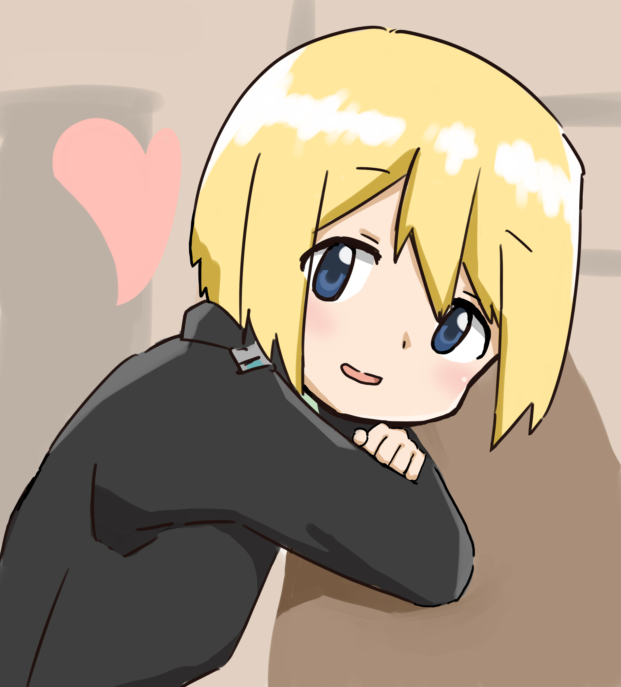

文京ちるだ @NyanModel
最近はEOS 6D + 7Dで写真撮って生きてます。旅行に行きたいので、はよCOVID-19には終息して欲しいところ。
まれに絵を描きます。
エーリカ・ハルトマンのファンアートです (2020年5月4日)

初のUTAU楽曲です。処女作です。ストリングスのアタックの遅さや自分のドラムセンスのなさに苦悩しつつもなんとか完成しました。
楽器が弾けなくても音楽が作れる時代らしい (2018年12月30日)